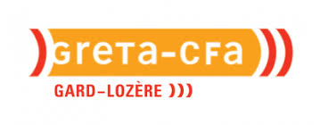
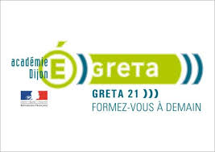

-
Onlineformapro de 02/2022 à aujourd'hui
- Répondre aux appels d'offres
- Gérer la mise en place d'actions de formation
- Garantir la conformité et la qualité jusqu'à la certification
- Participer aux réunions du CODIR et au développement stratégique
-
Directeur national des formations du numérique
- 5 titres professionnels (CDUI, CDA, TSSR, DWWM, TAI)
- 10 formateurs en moyenne (CDD, CDI ou consultants)
- 500 stagiaires par an et environ 90% de réussite
-
Directeur régional des formations qualifiantes
- 10 titres professionnels (SAMS, SA, CA, GP, ARH, ADVF, GFC ...)
- 20 formateurs en moyenne (CDD, CDI ou consultants)
- 1000 stagiaires par an et environ 80% de réussite
-
Directeur régional des dispositifs d'insertion
- 2 dispositifs : MTI et compétences transverses
- 10 sessions par an
- 20 formateurs en moyenne (CDD, CDI ou consultants)
- 1000 stagiaires par an et environ 75% de réussite

search
GRETA-CFA GARD/LOZERE de 09/2021 à 01/2022
- Répondre aux appels d'offres
- Gérer les budgets et rééquilibrer l'assiette
- Gérer la partie RH du recrutement au licenciement
- Mise en place de la démarche qualité Eduform
- Garantir la conformité et la qualité jusqu'à la certification
Directeur opérationnel et Conseiller en formation continue
- 8 certifications / 3 dispositifs d'accompagnement
- équipe composée d'un coordinateur, 3 assistantes et 15 formateurs
- 200 stagiaires par an et environ 72% de réussite

search
GRETA 21 de 09/2010 à 08/2021
- Répondre aux appels d'offres
- Veille à l'équilibre financier des actions de formation
- Gérer le recrutement des formateurs
- Garantir la conformité et la qualité jusqu'à la certification
- Gérer le fonctionnement des plateaux techniques
Conseiller en formation continue
- 8 titres professionnels et diplômes d'état
- 10 formateurs
- 140 stagiaires par an et environ 85% de réussite